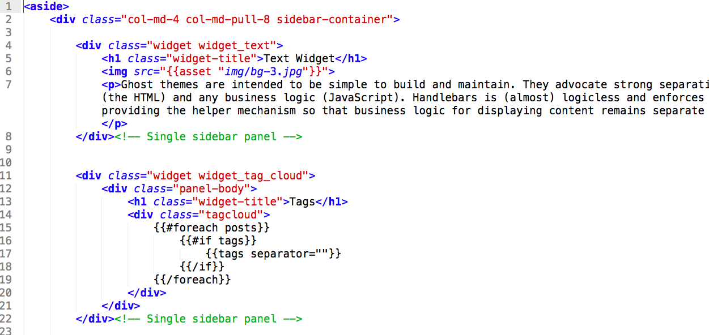

Thank you for purchasing this theme. If you have any questions that are beyond the scope of this help file, please feel free to email via my user page contact form here. Thanks so much!.
Version : 1.0 | Compatibility : Ghost 0.5.x | Last Update : April 5, 2015
Here's a rough overview of the theme file structure.
|-- /assets
|--css [Style Sheets]
|-- bootstrap.css [Twitter Bootstrap Library]
|-- style.css [Main CSS for theme]
|-- responsive.css [Media Queries for all devices]
|--img [images that used inside theme]
|--js [JavaScript Files]
|-- instafeed.js [JS for Instagram Feed on sidebar]
|-- jQuery-2.1.1.js [jQuery Library File]
|-- jquery.fitvids.js [JS for fitting video well inside posts]
|-- scripts.js [Main Theme JS file]
|-- partials [part templates, see: http://docs.ghost.org/themes/]
|-- footer.hbs [Page footer]
|-- loop.hbs [For post query]
|-- navigation.hbs [Navigation menu template]
|-- pagination.hbs [Pagination template]
|-- prealoder.hbs [Page preloader template]
|-- sidebar.hbs [Sidebar template]
|-- author.hbs [For author page]
|-- default.hbs [Ghost default, see: http://docs.ghost.org/themes/]
|-- error.hbs [For 404 error page]
|-- home.hbs [Main Home template]
|-- index.hbs [Default template]
|-- package.json [Contains Theme information]
|-- page.hbs [Single static page template]
|-- post.hbs [Single post template]
|-- tag.hbs [Tag Page template]
If you need to edit your theme. See the description above of each file and find your one to edit.
NOTE: This assumes you have Ghost installed. For help installing Ghost check out www.howtoinstallghost.com. or see official documentation for installing ghost
For further help visit official user guide of Ghost
You'll see your Home page is pretty ready actually. Just login to your Ghost dashboard and place your basic information on Settings menu like below :
You are done with your home page.
You can set your posts per page. We recommend 4/6/8 or any even number that suits most this theme.
This theme comes with Ghost new dynamic navigation. All you need to add Navigation item from your admin panel -
Don't forget to set your page URL same as you placed on navigation menu.
Now to enable a Menu, you have to create a static Page by just checking “Static Page” option and giving the appropriate URL that defined on theme like below :
Post image is important for this theme. It's also displayed on Home Page post timeline.
Add your post image like below :
To enable disqus comment you have to replace your disqus code from post.hbs. Find the section commented with “{{! Discuss Comment Integration}}” and replace with your code. You will have to create a disqus account from their website : disqus.com
Also configure the scripts from default.hbs
Here is a good write up for more details. http://blog.christophvoigt.com/enable-comments-on-ghost-with-disqus/
This theme contains sidebar with different options. Open your partials/sidebar.hbs files to edit the sidebar contents.

You will see each single widget commented with < ! -- Single sidebar panel - - >.
Just edit/remove the widget and that's it!
For Mailchimp Newsletter, use your own form action URL. Get it from Mailchimp website by login with your account.
Use your own Facebook page URL for Facebook Like widget. New Facebook Page Plugin used here as the old embed will stop working after June, 2015
You can also use any Font Awesome Icons anywhere that is also included with the theme.